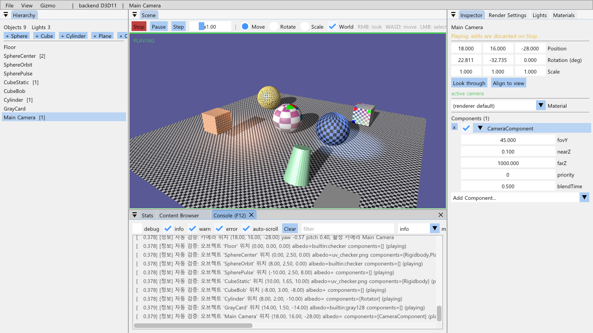
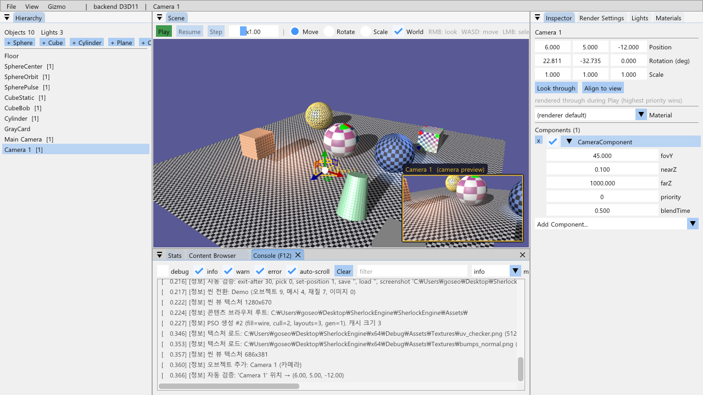
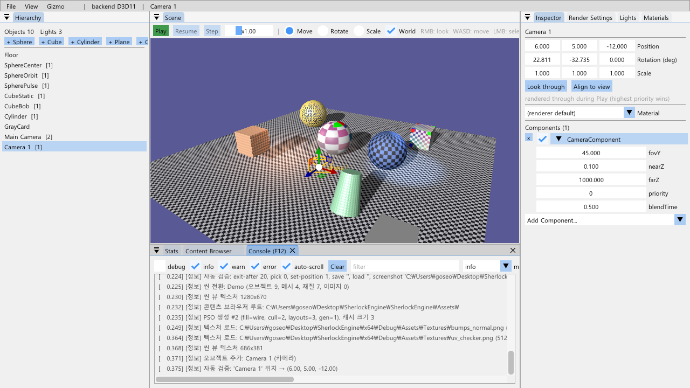
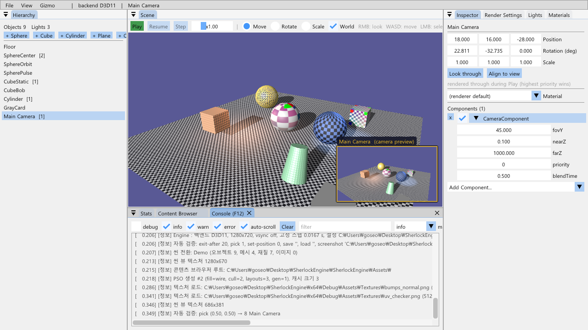
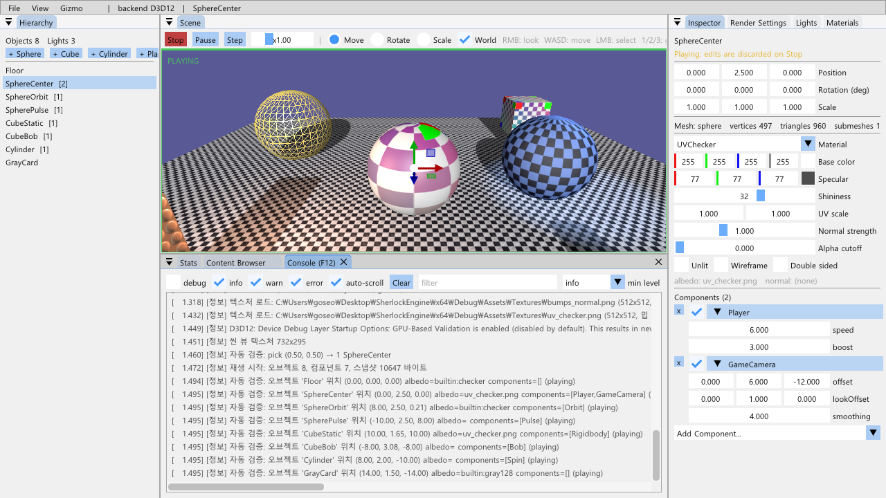

11-C단계 · 재생 모드와 C++ 컴포넌트
언리얼의 Play In Editor 처럼, 씬 뷰의 Play 를 눌러야 게임이 돕니다. 오브젝트의 로직은 Game/ 폴더의 C++ 클래스(Behaviour)이고, Visual Studio 에서 클래스를 하나 추가해 빌드하면 Inspector 의 "Add Component" 목록에 나타나 씬 파일에 이름으로 저장됩니다. Stop 은 재생 전 스냅샷을 되돌리므로 편집 중인 씬은 재생에 오염되지 않습니다.
게임 로직은 Behaviour 를 상속한 C++ 클래스이고, SHERLOCK_BEHAVIOUR(클래스) 한 줄이 이름 → 생성 함수를 레지스트리에 등록합니다. Reflect(PropertyVisitor&) 가 열거한 필드를 SceneSerializer 는 JSON 으로, Editor 는 ImGui 위젯으로 씁니다(Scene 계층은 ImGui 를 모릅니다). Play 는 씬+카메라를 JSON 문자열로 스냅샷하고 Scene::BeginPlay, Stop 은 그 문자열을 다시 로드합니다 — 11단계 SceneSerializer 위에 얹혀 렌더러는 한 줄도 바뀌지 않았습니다.
1.요약
| 항목 | 구현 | 확인 |
|---|---|---|
| Play / Pause / Step / Stop | 씬 뷰 툴바 버튼 + 시간 배율 슬라이더, Ctrl+P, F10(일시정지). TestApp::StartPlay/StopPlay/TogglePause/StepFrame | 자동 검증 A·B (9절), 그림 1·2 |
| C++ 스크립트 / 컴포넌트 | Scene/Behaviour.h: Behaviour(Start/Update/FixedUpdate/Reflect), PropertyVisitor, BehaviourRegistry. Scene/Script.h: 사용자 스크립트 기반(MonoBehaviour) — Translate/Rotate/LookAt/GetInput/Find/GetComponent 헬퍼, SHERLOCK_SCRIPT 매크로. 엔진 컴포넌트는 SHERLOCK_BEHAVIOUR | Inspector 의 Add Component 가 Scripts / Components 로 나뉘어 뜬다 |
| 재생 루프 | Scene::BeginPlay(input, camera) → 매 프레임 Update(dt×배율), 고정 스텝마다 FixedUpdate → EndPlay. 편집 중에는 부르지 않는다 | Play 전 정지, Play 뒤 이동 (그림 2 vs 1) |
| 스냅샷 | SceneSerializer::SaveToString / LoadFromString — 파일 버전과 같은 JSON | Stop 뒤 위치가 정확히 복원 (B) |
| 직렬화 | 오브젝트마다 "components": [{"type","enabled", …Reflect 필드}], 버전 2 (1도 읽힘) | 저장 → 재시작 로드에서 컴포넌트 복원 (C) |
| 내장 것 | 엔진 컴포넌트: Rigidbody(중력·바닥 반발·AddImpulse), FollowTarget(추적), CameraComponent. 예제 스크립트: PlayerController(방향키 이동 + Space 점프), Rotator(자전 한 줄) | 데모 씬의 움직임이 전부 스크립트로 (7절) |
| 씬 안의 카메라 | Scene/CameraComponent: 카메라 오브젝트("Main Camera")를 기즈모로 배치, 재생 중 priority 가 가장 높은 카메라로 렌더링(Play 시작은 즉시, 재생 도중 전환은 blendTime 보간). Hierarchy "+ Camera", 프러스텀 아이콘, Look through / Align to view, 선택한 카메라의 시점 미리보기(씬 뷰 우측 하단, Renderer PreviewPass) | 자동 검증 E·F (9절), 그림 1·5·6 |
| Inspector | 컴포넌트 목록(enabled 체크·삭제·필드 편집), Add Component 콤보, 재생 중 배너 | 그림 3 |
2.왜 필요했나: 켜자마자 움직이는 씬
11단계까지 데모 씬의 공전·진동·회전·맥동은 TestApp::OnUpdate 가 오브젝트 인덱스(m_orbitSphere 등)로 직접 위치를 쓰는 하드코딩이었습니다. 앱을 켜면 바로 움직였고, 오브젝트에는 "로직" 이라는 개념이 없어 사용자가 새 움직임을 붙일 방법도 없었습니다. 상용 엔진의 방식은 두 가지가 합쳐진 것입니다: (1) 로직을 오브젝트에 붙는 컴포넌트로 만들고, (2) 에디터가 "편집" 과 "재생" 을 구분해 재생 중에만 로직을 돌리고 끝나면 되돌린다. 이 단계는 그 둘을 11단계의 콜백 구조와 SceneSerializer 위에 얹습니다.
3.Behaviour: C++ 로 쓰는 오브젝트 로직
3.1 클래스 하나 = 스크립트 하나 (유니티 MonoBehaviour)
오브젝트의 움직임·규칙은 사용자가 직접 씁니다. 언리얼처럼 Game/Scripts/<이름>.h(선언) + .cpp(구현 + SHERLOCK_SCRIPT) 한 쌍이고, Inspector 의 New Script... 가 만들어 줍니다(3.4절). 헤더를 두는 이유는 스크립트끼리 서로 부르기 위해서입니다 — 부착·저장은 레지스트리의 이름으로만 일어나므로 헤더 없이도 되지만, 다른 스크립트가 #include 뒤 Find("Cylinder")->GetBehaviour<Rotator>()->Toggle() 처럼 타입으로 접근하려면 선언이 보여야 합니다(PlayerController 가 R 키로 그렇게 합니다). 처음의 시안에는 Orbit·Bob·Spin·Pulse 같은 기성 움직임 컴포넌트가 있었지만, "움직임은 내가 짠다" 가 목적이므로 없앴습니다. 대신 그런 움직임에 필요한 조작은 Transform 의 함수(Translate / TranslateLocal / Rotate / LookAt / GetForward)와 Script 의 단축(SetPosition / SetScale / GetInput / GetTime / Find / GetComponent<T>)으로 두어 Update 에서 부릅니다.
// Game/Scripts/Rotator.h — 선언. 다른 스크립트가 include 해서 Toggle/SetSpeed 를 부른다
#pragma once
#include "Scene/Script.h"
class Rotator : public Script
{
public:
const char* GetTypeName() const override; // SHERLOCK_SCRIPT 가 정의 (.cpp)
void Reflect(PropertyVisitor& v) override;
void Update(float dt) override;
void Toggle() { enabled = !enabled; } // 다른 스크립트가 부르는 API
DirectX::XMFLOAT3 degreesPerSecond = DirectX::XMFLOAT3(0.0f, 60.0f, 0.0f);
};
// Game/Scripts/Rotator.cpp — 구현 + 등록. 옛 Spin 컴포넌트가 Rotate 호출 한 줄이 됐다
#include "pch.h"
#include "Game/Scripts/Rotator.h"
void Rotator::Reflect(PropertyVisitor& v) { v.Float3("degreesPerSecond", degreesPerSecond, 1.0f); } // 저장 + Inspector
void Rotator::Update(float dt) { Rotate(XMConvertToRadians(degreesPerSecond.x) * dt, XMConvertToRadians(degreesPerSecond.y) * dt, XMConvertToRadians(degreesPerSecond.z) * dt); }
SHERLOCK_SCRIPT(Rotator) // 이름 "Rotator" 로 등록. 빌드하면 Add Component 의 Scripts 목록에 나타난다
// Game/Scripts/PlayerController.h — 다른 스크립트 참조는 헤더에서 전방 선언, .cpp 에서 include (순환 include 방지)
class Rotator;
class PlayerController : public Script { … std::string rotatorObject = "Cylinder"; Rotator* m_rotator = nullptr; };
// Game/Scripts/PlayerController.cpp — 입력 + 같은 오브젝트의 컴포넌트 + 다른 오브젝트의 스크립트
#include "Game/Scripts/Rotator.h"
#include "Game/Components/Rigidbody.h"
void PlayerController::Start() { if (GameObject* o = Find(rotatorObject)) m_rotator = o->GetBehaviour<Rotator>(); } // 재생마다 다시 찾는다
void PlayerController::Update(float dt)
{
Input& input = GetInput();
if (input.IsKeyDown(VK_LEFT)) Translate(-speed * dt, 0, 0);
if (input.IsKeyPressed(VK_SPACE))
if (Rigidbody* body = GetComponent<Rigidbody>()) if (body->IsGrounded()) body->AddImpulse(0, jumpSpeed, 0);
if (input.IsKeyPressed('R') && m_rotator) m_rotator->Toggle(); // 스크립트 → 스크립트
}스크립트끼리 참조할 때의 규칙: 상대 포인터는 Start 에서 찾아 멤버에 둔다(오브젝트는 unique_ptr 라 재생 중 주소가 안정적). Stop 은 씬을 스냅샷에서 다시 만들므로 이전 재생의 포인터는 무효이고, 재생마다 Start 가 다시 불리니 거기서 다시 찾으면 된다. 상대가 아직 Start 전일 수 있으므로(오브젝트 순서) 상대의 초기화 결과에 의존하면 첫 Update 에서 찾는다. 헤더끼리는 서로 include 하지 않고 전방 선언 + 포인터.
생명주기는 유니티의 MonoBehaviour 와 같습니다: Start(재생 시작 뒤 첫 프레임, 재생 중 추가된 것도 그 다음 프레임에), Update(dt)(매 프레임, 시간 배율 반영), FixedUpdate(fixedDt)(10단계 고정 스텝 — Rigidbody 가 쓴다). enabled 가 false 면 Update/FixedUpdate 를 받지 않습니다. Script 는 Behaviour(모든 컴포넌트의 기반)의 얇은 하위 클래스로 헬퍼만 더합니다 — 엔진 컴포넌트(Rigidbody·CameraComponent·FollowTarget)는 Behaviour 를 직접 상속하고 SHERLOCK_BEHAVIOUR 로 등록하며, 스크립트에서 GetComponent<Rigidbody>() 로 찾아 쓸 수 있게 헤더(Game/Components/Rigidbody.h)를 갖습니다.
3.2 레지스트리와 SHERLOCK_BEHAVIOUR
#define SHERLOCK_BEHAVIOUR(ClassName) \
const char* ClassName::GetTypeName() const { return #ClassName; } \
namespace { struct ClassName##_Registrar { ClassName##_Registrar() { \
BehaviourRegistry::Register(#ClassName, []() { return std::make_unique<ClassName>(); }); } } s_##ClassName##_Registrar; }정적 객체의 생성자가 main 전에 이름 → 생성 함수를 등록합니다. 레지스트리의 map 은 함수 안의 static(Meyers singleton)이라 정적 초기화 순서에 안전합니다. 정적 라이브러리였다면 "참조되지 않은 .obj 의 정적 초기화가 링크에서 빠지는" 함정이 있지만, 이 프로젝트는 컴포넌트가 exe 에 직접 컴파일되므로 해당하지 않습니다 — 게임을 별도 모듈로 나누는 날이 오면 이 지점을 다시 봐야 합니다(12절). GameObject::AddBehaviour("Rotator"), SceneSerializer, Inspector 콤보가 전부 이 레지스트리를 씁니다. SHERLOCK_SCRIPT 는 같은 등록에 "스크립트" 표시를 더해 Inspector 가 Scripts / Components 로 나눠 보여 줍니다.
3.3 PropertyVisitor: 저장과 Inspector 를 한 번에
컴포넌트마다 JSON 코드와 ImGui 코드를 따로 쓰게 하면 Scene 계층이 ImGui 를 알게 되고(3단계의 "패널은 편집만, Scene 은 CPU 데이터" 규칙 위반) 필드를 하나 더할 때마다 세 곳을 고쳐야 합니다. 그래서 컴포넌트는 Reflect 에서 필드를 열거만 하고, 방문자가 무엇을 하는지는 모릅니다.
class PropertyVisitor { virtual void Float(name, float&, speed) = 0; Int; Bool; Float3; String; };
// SceneSerializer.cpp — JsonWriteVisitor: m_j[name] = value / JsonReadVisitor: if (contains) value = m_j[name]
// Editor.cpp — ImGuiPropertyVisitor: ImGui::DragFloat(name, &value, speed) …
// TestApp.cpp — 데모 씬 구성에서도 방문자로 초기값을 넣는다 (Rigidbody.initialVelocity)필드를 하나 더하면 Reflect 한 줄로 저장·로드·편집이 같이 생깁니다. 반사(reflection)의 가장 작은 형태입니다.
3.4 에디터에서 새 스크립트 만들기 · 편집
유니티의 Create > C# Script 에 해당합니다. Inspector 의 New Script... 에 클래스 이름을 넣으면 App/ScriptCreator 가 (1) Game/Scripts/<이름>.h(선언: Reflect·Start·Update, 필드)와 <이름>.cpp(구현 골격, 쓸 수 있는 함수 목록 주석, SHERLOCK_SCRIPT)를 템플릿으로 만들고, (2) SherlockEngine.vcxproj 와 .filters 의 마지막 Game\Scripts 항목 뒤에 <ClInclude>·<ClCompile> 줄을 끼워 넣고(줄 끝·BOM 은 파일을 따른다), (3) 두 파일을 연결 프로그램(보통 Visual Studio)으로 엽니다 — 언리얼의 New C++ Class 와 같은 결과. 스크립트 컴포넌트 헤더의 Edit 버튼은 그 .h/.cpp 를 바로 엽니다.
에디터는 컴파일하지 않습니다 — C++ 이므로 만들거나 고친 뒤 Visual Studio 에서 빌드(Ctrl+Shift+B)하고 앱을 다시 실행해야 Add Component 의 Scripts 목록에 나타납니다(팝업과 상태 메시지가 안내). 소스 트리가 있는 저장소 빌드(x64\Debug)에서만 되고, 배포 빌드에서는 버튼이 "source tree not found" 를 보입니다. 자동 검증 --new-script=TestScript 로 같은 경로를 창 없이 돌려, 생성된 .h/.cpp 가 그대로 컴파일되고 재실행 뒤 --add-component=TestScript 가 붙는 것을 확인했습니다(검증 뒤 파일과 항목은 지웠다). 데모 재생에서 PlayerController 가 Cylinder 의 Rotator 를 찾는다(경고 없음). 라이브 코딩(실행 중 재컴파일)은 12절.
4.재생 루프: Scene::Update 와 PlayContext
// Scene — 재생 중에만 컴포넌트를 부른다. 컨텍스트는 씬이 하나 들고 컴포넌트가 포인터로 본다.
void BeginPlay(Input*, Camera*); // m_playContext 채우고 모든 컴포넌트에 넘김
void Update(float dt) // totalTime += dt; cameraDriven = false; 인덱스 순회 → Start 안 된 것은 Start → enabled 면 Update
void FixedUpdate(float fixedDt); // Start 를 받은 것만
void EndPlay();
// TestApp — AppBase 루프에서 (10단계 순서 그대로)
OnFixedUpdate: if (Playing) scene.FixedUpdate(fixedDt * m_timeScale);
OnUpdate: if (Playing) scene.Update(dt * m_timeScale); else if (m_stepOnce) { FixedUpdate(step); Update(step); }순회는 인덱스로 합니다 — 컴포넌트가 재생 중 오브젝트를 추가해 벡터가 재할당돼도 안전합니다(삭제는 순회 중 금지, 6절). PlayContext::cameraDriven 은 GameCamera 같은 컴포넌트가 카메라를 움직였다는 표시로, TestApp::UpdateCamera 가 참이면 WASD/RMB 를 건너뜁니다. 시간 배율은 dt 에 곱하므로 0 이면 멈춘 채 재생 상태이고, 고정 스텝에도 곱해 Rigidbody 가 같은 비율로 느려집니다.
5.Play / Pause / Step / Stop: 스냅샷
// StartPlay: 편집 씬을 문자열로 적어 두고 재생 시작
m_playSnapshot = SceneSerializer::SaveToString(scene, camera); // 씬 + 카메라 (10.6 KB, 데모 씬)
scene.BeginPlay(&input, &camera);
// StopPlay: 되돌리기 = 씬 로드와 같은 경로
scene.EndPlay();
renderer.InvalidateScene(scene, false); // 메시·재질 포인터 키 캐시. 텍스처는 유지 (다시 읽지 않는다)
SceneSerializer::LoadFromString(scene, camera, assets, m_playSnapshot, "play snapshot");
m_editor.SetSelectedObject(selected); // 오브젝트 순서가 같으므로 선택 인덱스는 그대로유니티가 하는 방식 그대로입니다. 재생 중의 편집(기즈모·Inspector)은 막지 않고 Inspector 에 "Playing: edits are discarded on Stop" 배너를 띄웁니다 — 언리얼 PIE 도 같은 동작이고, 재생 중 값을 만져 보는 것이 튜닝에 유용하기 때문입니다. Pause 는 Update 를 부르지 않을 뿐이고, Step 은 일시정지 상태에서 고정 스텝(1/60 s) 한 번을 FixedUpdate + Update 로 돌립니다. 스냅샷이 씬 로드와 같은 경로라, 저장되지 않는 것(GPU 자원, 렌더 설정)은 재생에도 영향받지 않는다는 규칙이 자동으로 지켜집니다.
6.GameObject 를 unique_ptr 로
이 단계의 가장 큰 파급입니다. Scene::m_objects 는 std::vector<GameObject>(값)였습니다. 컴포넌트가 GameObject* 소유자를 들면 벡터가 늘어날 때(재생 중 오브젝트 추가, 모델 드롭) 주소가 바뀌어 댕글링이 됩니다. 그래서 std::vector<std::unique_ptr<GameObject>> 로 바꾸고 GameObject 의 복사를 지웠습니다. 메시·재질은 3단계부터 이미 unique_ptr 라 렌더러의 포인터 키 캐시는 영향이 없고, 바뀐 곳은 GetObjects()[i]. → -> 인 Editor·TestApp·Renderer·SceneSerializer 의 순회 30여 곳입니다. 인덱스는 여전히 에디터 선택의 식별자이고 Scene::RemoveObject 만 뒤 인덱스를 밀어냅니다(그래서 삭제만 Demo → File 모드 전환).
7.내장 컴포넌트 (Game/)
| 클래스 | 필드 (Reflect) | 동작 | 데모 씬 |
|---|---|---|---|
PlayerController (스크립트) | speed, boost, jumpSpeed | 방향키로 Translate, Shift 가속, Space 로 GetComponent<Rigidbody>()->AddImpulse (바닥에 닿았을 때) | SphereCenter (+ Rigidbody) |
Rotator (스크립트) | degreesPerSecond | Rotate(...) 한 줄 | Cylinder (기울임 0.3 은 Transform) |
FollowTarget | target(이름), offset, lookOffset, smoothing | 소유 오브젝트를 target 뒤 offset 으로 부드럽게 옮기고 target 을 바라보게 회전 (Scene::FindObject) | (기본 씬에는 없음 — 카메라에 붙이면 추적 카메라) |
Rigidbody | initialVelocity, gravity, bounciness, radius, groundY, drag | FixedUpdate: 중력·적분·바닥 반발 (오브젝트 간 충돌 없음) | CubeStatic (위로 9 m/s) |
데모 씬의 움직임은 이제 스크립트 두 개뿐입니다: Play 를 누르면 방향키로 가운데 구를 움직이고 Space 로 점프하며(PlayerController + Rigidbody), 원기둥이 자전하고(Rotator), CubeStatic 이 튀어 올랐다 떨어집니다(Rigidbody 초기 속도). 나머지 오브젝트는 가만히 있습니다 — 공전·진동·맥동 같은 움직임은 이제 사용자가 스크립트를 써서 붙입니다. PlayerController 가 WASD 가 아니라 방향키를 쓰는 것은 WASD 가 에디터 카메라(2단계)의 것이기 때문입니다. Rigidbody 는 물리 엔진의 자리표시자입니다 — 바닥과만 반발하고 오브젝트끼리는 충돌하지 않습니다(IsGrounded / AddImpulse / SetVelocity 가 스크립트용 API).
7.1 씬 안의 카메라: CameraComponent
처음 버전은 "GameCamera" 컴포넌트가 오프셋으로 엔진 카메라를 직접 움직였습니다. 그러면 사용자가 카메라를 씬에서 배치할 수 없습니다. 유니티의 Main Camera 처럼 카메라도 오브젝트여야 합니다. 그래서 Scene/CameraComponent(Game/ 이 아니라 Scene/ — 에디터와 씬이 타입을 알아야 하므로)를 두었습니다.
// 카메라 = 메시 없는 GameObject + CameraComponent. 자세는 그 오브젝트의 Transform (position 이 눈, rotation.x pitch, rotation.y yaw)
class CameraComponent : public Behaviour {
float fovYDegrees = 45, nearZ = 0.1f, farZ = 1000;
int priority = 0; // 높은 것이 활성. 같으면 오브젝트 순서
float blendTime = 0.5f; // 이 카메라로 전환될 때 이전 시점에서 보간
CameraPose GetPose() const; void ApplyTo(Camera&, bool lens); void SetFromCamera(const Camera&);
};
// Scene::Update 의 끝 — 모든 컴포넌트(FollowTarget 포함)가 움직인 뒤
void Scene::ApplyActiveCamera(float dt)
{
CameraComponent* next = FindActiveCamera(); // enabled 중 priority 최대. 없으면 에디터 카메라 그대로
if (next != m_activeCamera) { m_blendFrom = 현재 카메라 자세; m_blendDuration = (첫 활성화 ? 0 : next->blendTime); … }
pose = next->GetPose(); if (블렌드 중) pose = smoothstep 보간(m_blendFrom, pose); // yaw 는 짧은 쪽으로
camera->SetPosition / SetYawPitch / SetLens(fov, 종횡비 유지, near, far); m_playContext.cameraDriven = true;
}- 편집 중: 에디터 카메라로 본다. 카메라 오브젝트는 씬 뷰에 프러스텀 아이콘(1.5 단위 앞 단면 + 위 삼각형 + 이름)으로 보이고, 메시가 없어도 1 단위 상자로 클릭 선택된다. Hierarchy 의 "+ Camera" 는 지금 에디터 시점에 "Camera N" 을 만든다. Inspector 의 Look through(에디터 시점 ← 카메라)와 Align to view(카메라 ← 에디터 시점)로 자리를 잡는다.
- 재생 중: 활성 카메라의 자세가 매 프레임 엔진 카메라에 쓰인다. Play 시작은 언제나 즉시 — 에디터 시점에서 카메라로 미끄러지지 않는다(
blendTime은 재생 도중 카메라끼리 전환할 때만). Stop 은 스냅샷의 에디터 카메라를 되돌린다. 데모 씬의 Main Camera 는 놓아 둔 자리에 그대로 있다. 처음에는FollowTarget(SphereCenter)을 달아 두었는데, Play 를 누르면 카메라가 배치한 자리에서 구 뒤로 이동해 "엉뚱한 카메라로 간다" 로 보여서 뺐다 — 추적 카메라를 원하면 Inspector 에서 붙인다. - 미리보기: 카메라 오브젝트를 선택하면 씬 뷰 우측 하단(폭의 32%)에 그 카메라의 시점이 뜬다(유니티의 Camera Preview).
Renderer가 메인 패스 뒤에PreviewPass를 하나 더 돈다: b0 PerFrame 만 그 카메라의 view/proj 로 다시 올리고(업로드 링이라 프레임 안에서 여러 번 가능), 같은 그림자 맵·같은 드로우 목록으로 작은 TYPELESS 타깃에 그린 뒤 ImGui 가 샘플한다. 에디터는CameraComponent::ApplyTo로 채운 임시Camera를 넘기고, 선택이 풀리면 타깃을 돌려준다. - 카메라 전환(앞으로): 카메라를 여러 개 두고 재생 중
priority를 올리거나enabled를 켜면 그 카메라로 넘어가며blendTime동안 위치·yaw(짧은 쪽)·pitch·fov 를 smoothstep 으로 보간한다. 컷씬이나 "문을 열면 고정 카메라" 같은 연출은 컴포넌트가 다른 오브젝트의 CameraComponent 를 찾아(FindObject→GetBehaviour<CameraComponent>) priority 를 바꾸는 것으로 충분하다. 언리얼의SetViewTargetWithBlend, 유니티 Cinemachine 의 우선순위 방식과 같은 골격이다. - 모든 씬(데모·헬멧·Sponza·새 씬)에 처음 시점 위치의 "Main Camera" 가 하나씩 생긴다. 씬 파일에는 메시 −1 오브젝트 + components 로 저장된다(버전 2, 형식 변경 없음).
8.에디터: 툴바·Inspector·표시
- 씬 뷰 툴바: [Play] 또는 [Stop], [Pause/Resume], [Step], 시간 배율 슬라이더(x0 ~ x4). 상태는 앱이 갖고(
TestApp::m_playState) 에디터에는 매 프레임 표시용으로 넣어 줍니다 — 11단계 "에디터는 소유하지 않는다" 규칙. - 재생 표시: 씬 뷰 테두리 초록(재생)/노랑(일시정지) + "PLAYING" 라벨, Inspector 배너. 언리얼 PIE 의 색 테두리와 같은 의도.
- Inspector 컴포넌트: 컴포넌트마다 [x](삭제) [☑](enabled) 접이식 헤더 + Reflect 필드 위젯, 아래 "Add Component..." 콤보(레지스트리 이름). Hierarchy 이름 뒤
[n]은 컴포넌트 수. - 단축키: Ctrl+P 재생/정지(에디터), F10 일시정지(앱 — 7단계의 "고정" 키가 이 뜻이 됐다).
9.자동 검증
# A: 데모 씬 재생 → 20 프레임째 덤프 (components 와 (playing) 표시, 위치가 변했다) → 스크린샷
SherlockEngine.exe --scene=demo --exit-after=90 --play=1 --pick=0.5,0.5 --dump-objects=1 --screenshot=...
# B: 재생 → 15 프레임째 Stop → 20 프레임째 덤프 (재생 전 위치로 정확히 복원, (editing))
SherlockEngine.exe --scene=demo --exit-after=30 --play=1 --stop-at=15 --dump-objects=1
# C: 컴포넌트 저장 → 재시작 로드 → components=[...] 복원
SherlockEngine.exe --scene=demo --exit-after=20 --save=demo_components.json
SherlockEngine.exe --exit-after=30 --load=demo_components.json --dump-objects=1
# D: 새 씬에 큐브 → 재생 중 Rotator 스크립트 추가 (Inspector 의 Add Component 와 같은 경로) → 돈다
SherlockEngine.exe --exit-after=60 --new-scene=1 --add=1 --add-component=Rotator --play=1 --dump-objects=1
# E: 재생 중 활성 카메라 = Main Camera (덤프의 "카메라 위치 … 활성 카메라 Main Camera"), Stop 뒤 에디터 시점 (18, 16, −28) 복원
SherlockEngine.exe --scene=demo --exit-after=120 --play=1 --dump-objects=1
SherlockEngine.exe --scene=demo --exit-after=30 --play=1 --stop-at=15 --dump-objects=1
# F: 카메라 오브젝트 추가(--add=4) 후 이동 → 씬 뷰에 프러스텀 아이콘
SherlockEngine.exe --scene=demo --exit-after=20 --add=4 --set-position=6,5,-12 --dump-objects=1 --screenshot=...10.함정과 해결
- 포인터 안정성. 6절. 값 벡터의 GameObject 를 컴포넌트가 가리키면 벡터 재할당에 깨진다. unique_ptr 로.
- 순회 중 삭제.
Scene::Update는 인덱스 순회라 추가는 안전하지만 삭제는 인덱스를 밀어낸다. 컴포넌트에서 오브젝트를 지우려면 "삭제 예약 → 프레임 끝에 처리" 가 필요하다(12절). - Reflect 는 non-const. Inspector 가 값을 바꾸므로 참조를 받는다. 저장 방문자도 같은 함수를 쓰므로
ComponentsToJson에서const_cast한 번 — 쓰기 방문자는 값을 바꾸지 않는다는 약속. - Stop 뒤 렌더러 캐시. 스냅샷 로드는 새 Mesh/Material 포인터를 만든다.
InvalidateScene(scene, false)로 메시·재질 캐시만 버리고 텍스처는 남긴다(다시 디코딩하지 않는다). 11단계LoadSceneFile과 같은 순서. - 재생 중 카메라 충돌. 활성 CameraComponent 가 카메라를 쓰는 프레임에 에디터의 WASD/RMB 도 쓰면 떨린다.
cameraDriven플래그로 에디터 컨트롤러를 끄고, RMB 룩이 켜져 있었으면EndLook. 카메라 오브젝트가 없는 씬은 플래그가 false 라 재생 중에도 에디터 카메라를 조종할 수 있다. - 에디터 눈과 겹친 프러스텀. "Align to view" 직후의 카메라는 에디터 눈과 같은 자리라 프러스텀이 화면 테두리와 일치하고 apex 의 w 가 0 이다. 눈과 0.1 단위 안이면 아이콘을 건너뛰고, 그리기는 이미지 클립 사각형 안으로 제한한다(툴바로 선이 새지 않게).
- ImGui 폰트에 ▶ 가 없다. 한글 글리프 범위(10단계 Malgun Gothic)에 U+25B6 은 없어 네모로 나온다. 버튼은 글자 "Play/Stop" 로.
- 검은 콘솔 창. 10단계부터 Debug 빌드는 로그용 콘솔(AllocConsole)을 하나 열었다. 에디터의 Console 창(F12)과 로그 파일이 그 역할을 하므로 이제 열지 않는다 —
engine.ini의log.allocConsole = true로 되살릴 수 있고, 명령줄에서 실행하면 부모 콘솔에는 여전히 붙는다. - F10 의 뜻이 바뀜. 7단계의 "애니메이션 t=0 고정" 은 편집 중에 아무것도 움직이지 않게 된 지금 의미가 없어 일시정지로 바꿨다. 8단계의 픽셀 비교는 편집 상태가 곧 결정적 상태다.
11.검증과 스크린샷
- 완료 기준 "Play 를 눌러야 움직이고 Stop 이 되돌린다" — A: 재생 시작 로그 "오브젝트 9, 컴포넌트 5", 20 프레임째 CubeStatic y = 1.65(Rigidbody 상승), SphereCenter [Rigidbody, PlayerController], Cylinder [Rotator], 전부 "(playing)". B: Stop 뒤 CubeStatic (10, 1.5, 10) 등 재생 전 좌표로 정확히 복원, "(editing)". (기성 움직임 컴포넌트가 있던 시안에서는 SphereOrbit·CubeBob 의 이동/복원도 같은 방식으로 확인했다.)
- C:
demo_components.json(버전 2) 저장 → 재시작 로드에서 components 가 전부 복원(Rigidbody, PlayerController / Rigidbody / Rotator / CameraComponent). - D: 새 씬의 Cube 1 에 재생 중 Rotator 스크립트 추가 → 다음 프레임에 Start 를 받고 Update 가 돈다.
- D3D12: 같은 A 가 같은 결과(그림 4), 종료 시 Debug Layer 메시지 0. Release: 재생 → 100 프레임째 Stop 복원 확인. Debug·Release 빌드 경고 0, 오류 0.
- 편집 중 스크린샷(그림 3)에서 데모 씬이 정지해 있고 Main Camera 가 선택되어 Inspector 에 CameraComponent 필드와 우측 하단 미리보기가 보인다. 재생 스크린샷(그림 1)에서 Main Camera 로 보고 있고, PLAYING 테두리, Hierarchy 의 [n].
- E: 재생 시작 로그 "활성 카메라: Main Camera (priority 0)", 20 프레임째 엔진 카메라 = Main Camera 오브젝트 위치 (18, 16, −28) — 배치한 자리 그대로, 보간 없음. Stop 뒤 활성 카메라 "(editor)". D3D12 Release 도 같다. F: "Camera 1" 이 에디터 시점에 생겨 (6, 5, −12) 로 이동, 프러스텀 아이콘과 우측 하단 미리보기 (그림 5·6), D3D12 동일.





12.다음 단계
- 오브젝트 생성/삭제 API. 컴포넌트가 재생 중 오브젝트를 만들거나(총알) 지우려면(적)
Scene::Instantiate / Destroy(지연)와 프리팹(JSON 조각)이 필요하다. 스냅샷 방식은 그대로 쓸 수 있다. - 충돌. Rigidbody 는 바닥 반발뿐이다. AABB/구 충돌과
OnCollision콜백, 또는 외부 물리 라이브러리. - 컴포넌트 간 참조.
GetOwner().GetBehaviour<T>()는 있지만 다른 오브젝트 참조는 이름(Scene::FindObject)뿐이다. 안정 ID 가 필요해지는 지점. - 게임 모듈 분리 / 라이브 코딩. 지금은 exe 에 직접 컴파일된다. DLL 로 나누면 레지스트리의 정적 초기화(3.2절)와 핫 리로드 시 컴포넌트 상태 보존을 설계해야 한다.
- Undo. 편집 조작(드롭·삭제·기즈모·컴포넌트 추가)이 전부 즉시 적용된다. 스냅샷과 같은 직렬화로 명령 스택을 만들 수 있다.
13.참고 문헌
- Unity Manual, Order of execution for event functions — Start/Update/FixedUpdate 의 순서와 재생 모드. docs.unity3d.com/Manual/ExecutionOrder.html
- Unreal Engine Documentation, Play In Editor — PIE 의 색 테두리, 재생 중 편집이 버려지는 규칙. dev.epicgames.com/…/playing-and-simulating-in-unreal-engine
- Robert Nystrom, Game Programming Patterns — Component. gameprogrammingpatterns.com/component.html
- Robert Nystrom, Game Programming Patterns — Update Method. gameprogrammingpatterns.com/update-method.html
- Scott Meyers, Effective C++ 항목 4 — 함수 안 static 으로 정적 초기화 순서 문제를 피한다 (레지스트리).
- Dear ImGui, BeginDisabled / TreeNodeEx(Framed) / BeginCombo. imgui.h